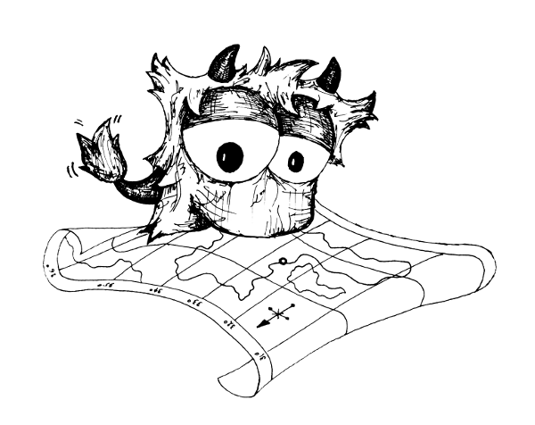

SOOKOLLI KAARDID
Don't follow me, I'm a geographer!
Asju:
Geopusle
Geograafiline mäng
GIS tulevik on JS
Ettekanne ESTGIS 2013 konverentsil
Teen ja kasutan:
Veebiarendus
HTML5, CSS3, JS, PHP
OpenLayers
Veebikaardi raamistik
Leaflet
Veebikaardi raamistik
D3.js
Andmete manipuleerimine veebis
GDAL/OGR
Geoandmete töötlemine
PostGIS
Geoandmete haldamine
MapServer
Kaartide ja andmete serveerimine
GeoServer
Kaartide ja andmete serveerimine
Minu käsi on mängus:
Eesti Aasta lind 2014
Vaatluste sisestamiste rakendus
Talvine aialinnuvaatlus 2013, 2014
Veebilehe lahendus ja vaatluste rakendus
Pääsupesade loendus 2013
Vaatluste sisestamise rakendus
Eesti Aasta lind 2013
Vaatluste sisestamiste rakendus
Võta ühendust:
mihkel [at] sookoll.ee
Twitter
kui säutsud
GitHub
kui kribad koodi
